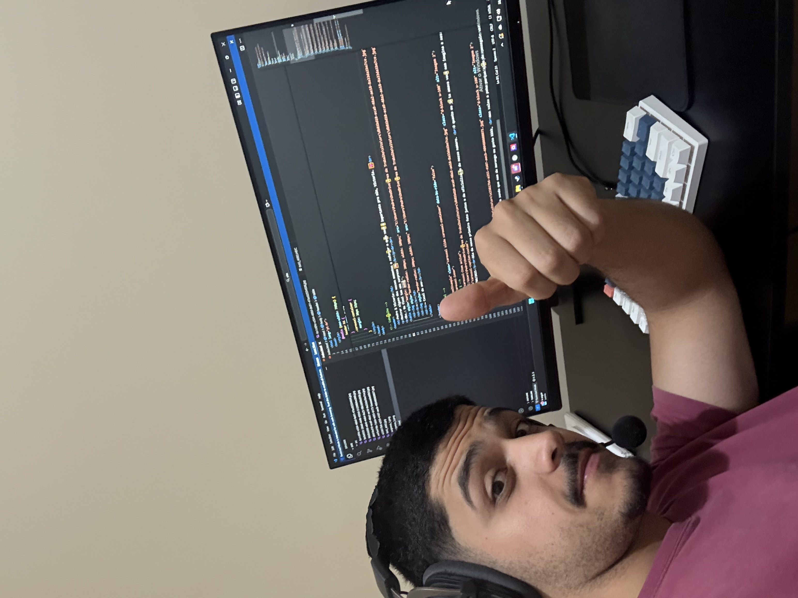
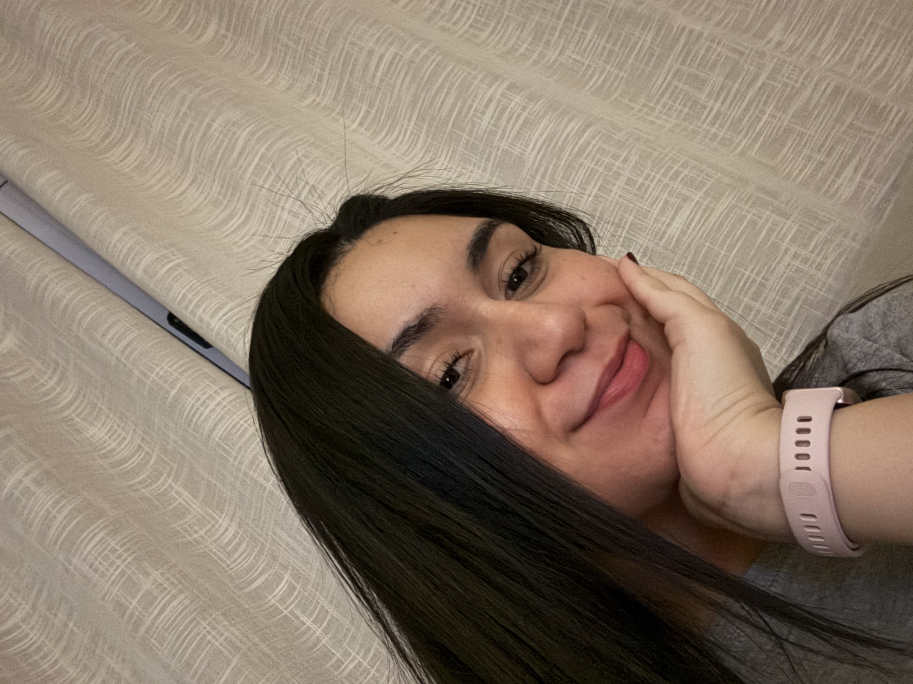

Alguns dos nossos momentos favoritos, reunidos pra reforçar o quanto você é importante pra mim, Victoria. ❤️

+
= Casal do anoVictoria,
Hoje faz 1 ano desde o show do ComVocação. 1 ano desde aquele dia em que paramos o carro em frente à sua casa e, de uma forma tão despretensiosa, saímos dali com a confirmação de que estávamos namorando. 1 ano em que o Santos perdeu de goleada para o Vasco, 1 ano em que eu comprei meu celular, 1 ano em que comemos aquela tapioca recheada... São tantas pequenas coisas que, olhando agora, parecem bobas, mas que acabaram fazendo parte de um dos dias mais importantes da minha vida. Eu sou ruim para lembrar das coisas e, principalmente, para lembrar de datas. Mas o dia 17/08/2025 eu lembro. Lembro de cada detalhe, porque aquele dia significou muito para mim. Não teve pedido de namoro, aliança ou qualquer coisa muito planejada. Foi simplesmente uma confirmação dos dois de que estávamos juntos e, mais do que isso, de que queríamos construir alguma coisa juntos. E foi exatamente isso que começamos a fazer. O tempo foi passando e, de forma muito natural, algumas coisas começaram a acontecer. Vieram os desentendimentos, as falhas de comunicação, algumas brigas por motivos completamente bestas. Coisas que antes não aconteciam começaram a acontecer e, em alguns momentos, até com bastante frequência. Tiveram meses em que parecia que todo final de semana a gente tinha algum problema para resolver. E, olhando para tudo isso hoje, eu acho que tem uma coisa que explica por que chegamos até aqui: o amor que temos um pelo outro. Porque, mesmo passando por tanta coisa, a gente nunca soltou a mão um do outro. A gente poderia ter desistido em vários momentos, mas não desistimos. Conversamos, brigamos, erramos, aprendemos, pedimos desculpas e continuamos. E acho que é isso que torna tudo ainda mais especial. Nesse nosso primeiro ano, além de te agradecer, eu também quero te pedir desculpas. Desculpa pelas vezes em que não demonstrei o amor que sinto por você da maneira que deveria. Desculpa pelas vezes em que, no meio de uma discussão, acabei falando de um jeito que nunca deveria ter falado e te magoei. Desculpa por alguma mensagem no WhatsApp que talvez eu tenha escrito de qualquer jeito, você tenha interpretado de outra forma e acabou ficando pensando em mil coisas. Desculpa por não ser, talvez, o cara 100% perfeito. Mas eu tento, mo. Juro que eu tento. E quero continuar tentando. Não porque eu ache que preciso ser perfeito para estar com você, mas porque você é alguém por quem vale a pena querer ser uma pessoa melhor todos os dias. Esse nosso primeiro ano me ensinou muita coisa sobre você, sobre mim e, principalmente, sobre nós. E apesar de todas as dificuldades, eu não trocaria a nossa história por uma história perfeita que não fosse a nossa. Obrigado por cada momento, por cada risada, por cada abraço, por cada conversa, por cada rolê, por cada final de semana juntos e até pelas discussões que, de alguma forma, fizeram a gente aprender a se conhecer ainda mais. Obrigado por ter escolhido ficar. Por continuar segurando a minha mão. Por construir isso comigo. Hoje, 1 ano depois daquele dia em frente à sua casa, eu só consigo pensar em quantas outras histórias ainda quero viver ao seu lado. Espero que Deus continue abençoando o nosso relacionamento, nos dando sabedoria, paciência e, principalmente, muito amor para que a gente possa comemorar essa data juntos por muitos e muitos anos. Quem sabe daqui a alguns anos a gente esteja lembrando daquele 17/08/2025 e rindo de como tudo começou. Eu te amo, mo. Feliz 1 ano de nós. ❤️
— Pedro